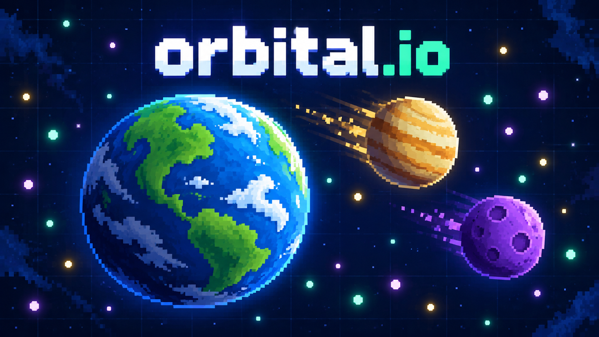
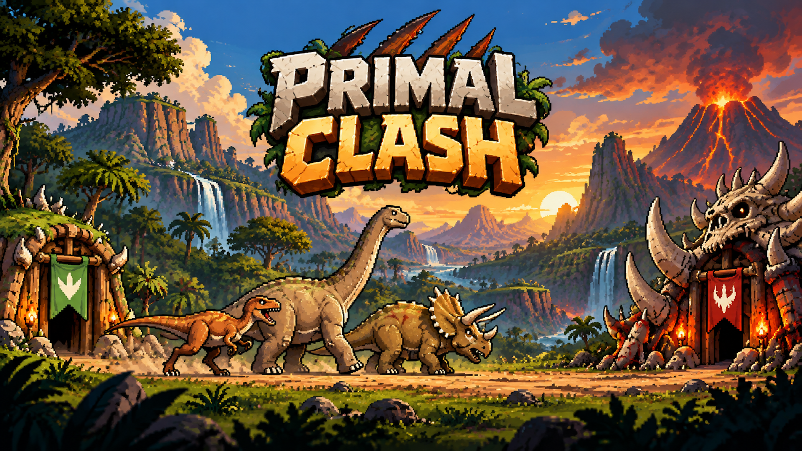

Sistemas, apps e sites
Desenvolvo aplicações, interfaces e integrações para resolver necessidades do dia a dia, da experiência de uso à lógica do sistema.
- JavaScript
- Python
- APIs
Software · Games · Dados
Sou Bruno Martins. Desenvolvo sistemas, aplicativos e sites, crio games e atuo como engenheiro de dados. Três frentes de trabalho, cada uma com seus próprios projetos e desafios.
01 — SOBRE
Desenvolvo sistemas, aplicativos e sites para diferentes necessidades. Também desenvolvo games, criando mecânicas, interfaces e experiências para quem joga. Na área de dados, atuo como engenheiro de dados, com foco em pipelines, modelagem e qualidade.
Cada frente tem espaço próprio no meu trabalho. Em todas elas, busco entender o problema, construir uma solução clara e verificar como ela funciona na prática.
02 — ÁREAS DE ATUAÇÃO
Desenvolvo aplicações, interfaces e integrações para resolver necessidades do dia a dia, da experiência de uso à lógica do sistema.
Crio jogos autorais: regras, combate, progressão, adversários e interfaces que dão forma à experiência de jogar.
Construo pipelines, modelos analíticos e datasets confiáveis, com automação, testes e documentação para quem consome os dados.
03 — JOGOS AUTORAIS
Games são meu hobby levado a sério — e um dia ainda quero que eles paguem as contas. Por enquanto, sigo criando mundos, regras e desafios porque gosto mesmo de ver uma ideia virar algo jogável.
Jogue aqui no site: dispute a arena espacial de Orbital.io ou lidere sua campanha em Primal Clash. Escolha a dificuldade e comece pelo navegador.

Uma arena espacial single player: colete recursos, cresça e enfrente nove bots. Todos começam com zero pontos; você escolhe entre Fácil, Normal e Difícil.
Jogar agora →
Uma campanha de estratégia em tempo real: recrutar tropas, gerenciar recursos e conquistar cinco fases em um mundo pré-histórico.
Jogar agora →04 — TECNOLOGIAS E PRÁTICAS
PRINCÍPIOS DE TRABALHO
Uso fundamentos de programação, testes e documentação nas três frentes. Em sistemas, cuido dos fluxos e integrações; em games, das regras e da experiência; em dados, dos modelos e da confiabilidade da operação.
Estou aprofundando uma arquitetura em AWS com S3, Glue, Redshift e Lake Formation, sempre com infraestrutura versionada e o menor conjunto de serviços necessário.
JavaScript, HTML, CSS, Python, APIs, Git e interfaces responsivas.
S3, Parquet, particionamento, IAM e políticas de ciclo de vida.
Unity, Unreal Engine, C#, C++ e JavaScript para mecânicas, simulação, bots, colisões, controles e progressão.
Glue Data Catalog, Lake Formation, Athena e Redshift.
dbt, testes, documentação, contratos e lineage.
Airflow, Docker, GitHub Actions, Terraform, CloudWatch e alertas.
A stack combina ferramentas que já uso nos projetos publicados com tecnologias que estou aprofundando na prática.
05 — PROJETOS
Aqui estão alguns projetos de dados que me deram trabalho — no melhor sentido. Para acompanhar as decisões por trás deles, visite o blog técnico.
DADOS PÚBLICOS · 2026
Um pipeline para organizar dados do TSE e transformar candidaturas, receitas e despesas em algo que dá para investigar sem abrir mil arquivos.
Explorar projeto06 — LABORATÓRIO DE DADOS
Cada aplicação tem um problema delimitado, uma forma simples de execução e ao menos uma evidência técnica: teste, métrica, decisão documentada ou demonstração. Em conjunto, elas ampliam o portfólio de fundamentos a cloud e observabilidade.
Ingestão incremental de API pública com Python, paginação, logs e arquivos JSON versionados no S3.
Python · AWS S3 · IAMConversor com validação de esquema e comparação simples de tamanho e tempo de consulta.
Python · Parquet · DuckDBSchema estrela com fatos e dimensões, queries de negócio e decisões de modelagem documentadas.
SQL · PostgreSQL · Data modelingModelos staging e marts, testes de unicidade e relacionamento, documentação e lineage.
dbt · SQL · Data qualityDAG idempotente com dependências, retry, backfill e alerta controlado de falha.
Apache Airflow · DockerCatalogação de dados no S3 e consultas serverless sobre uma camada de dados particionada.
AWS Glue · Athena · S3Carga de Parquet do S3, tabela de consumo e uma decisão de distribuição e ordenação explicada.
Amazon Redshift · S3 · SQLGeração, consumo e deduplicação de eventos de aplicações, com evento atrasado como caso de teste.
Kinesis ou Kafka · PythonBucket, permissões mínimas e recursos de processamento provisionados e revisáveis por código.
Terraform · AWS IAM · S3Métricas de freshness, volume e falhas com alerta e painel operacional enxuto.
CloudWatch · dbt tests · Observability07 — CONTATO
Se você quer conversar sobre sistemas, sites, dados ou games — especialmente se tiver uma ideia meio maluca — pode me escrever.